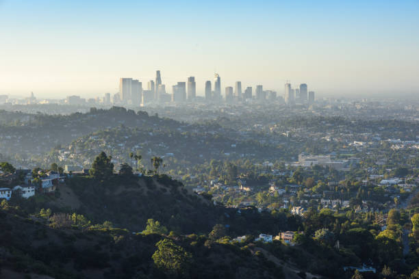
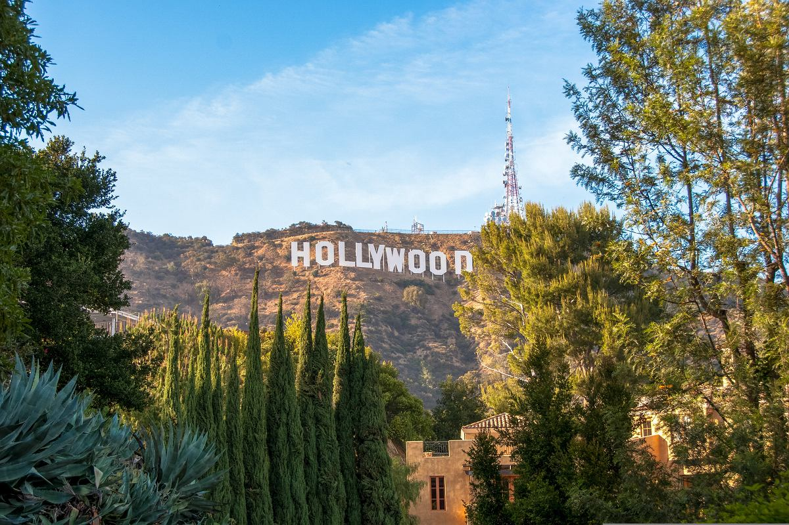
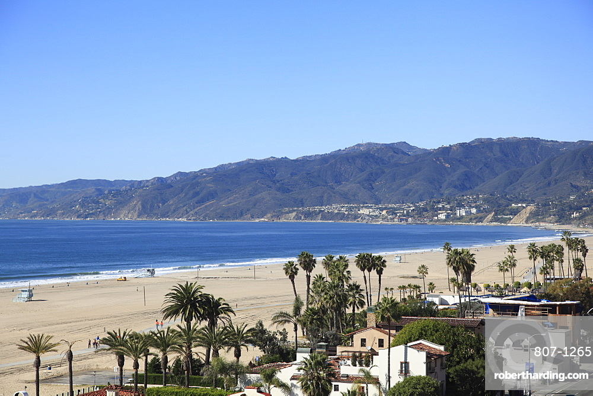

Los Angeles (often referred to by its initials, LA) is the most populous city in the U.S. state of California, and the commercial, financial, and cultural center of Southern California. With an estimated 3.88 million residents within the city limits as of 2024,it is the second-most populous city in the United States, behind New York City, and the largest city in the Western United States. The city has an ethnically and culturally diverse population, and is the principal city of a metropolitan area of 12.9 million people (2024). Greater Los Angeles, a combined statistical area that includes the Los Angeles and Riverside–San Bernardino metropolitan areas, is a sprawling metropolis of over 18.5 million residents.

Hollywood, sometimes informally called Tinseltown, is a neighborhood and district in Central Los Angeles, California. Its name has become synonymous with the American film industry and the people associated with it. Many notable film studios such as Universal Pictures, Paramount Pictures, Warner Bros., Walt Disney Studios, and Sony Pictures are located in or near Hollywood.

Santa Monica (Spanish: Santa Mónica, lit. 'Saint Monica') is a city in Los Angeles County, California, United States. It is situated along Santa Monica Bay on California's South Coast. As of the 2020 census, Santa Monica had a population of 93,076. Santa Monica is a popular resort town, owing to its climate, beaches, and hospitality industry. It has a diverse economy, hosting headquarters of companies such as Skydance Media, Hulu, Activision Blizzard, Universal Music Group, Starz Entertainment, Lionsgate Studios, Illumination and The Recording Academy.